Сегодня я расскажу, как подготовить рабочую среду для разработки под ARM Cortex-M3 микроконтроллеры STM32F10x. Среда должна в себя включать компилятор, редактор кода, отладчик, прошивалку микроконтроллера, а также должна быть удобна для использования. Ну и должна дружить с платами STM32VLDiscovery и STM32L-Discovery, само собой.Выбор IDE для ARM довольно большой, и можно их условно разделить на две группы — коммерческие и некоммерческие.
Коммерческие:
Некоммерческие:
Наверняка есть ещё, ведь IDE для ARM не сделал, похоже, только ленивый. Коммерческие IDE обычно довольно хороши, и большая их часть основана на Eclipse, но у всех них есть общие недостатки: они стоят денег (вот это новость!), их бесплатные версии имеют ограничения по объёму кода, не все поддерживают плату STM32VLDiscovery, а версии для Linux почти никто не делает (есть пара 30-дневных trial-версий). А в популярной, не знаю, почему, среде Keil ещё и редактор кода, судя по его виду и удобству, написан во времена Windows 95.
У кого много денег (или начальство на работе купило IDE), и кто не собирается слезать с Windows — спокойно берите эти жлобские поделки (: и мучайтесь/радуйтесь с ними, а я, не будучи буржуем de facto, предлагаю обратить внимание на бесплатные среды разработки. Конечно же, у них тоже есть и плюсы, и минусы — о них я расскажу в первую очередь.
[Eclipse] Офигенный редактор кода: подсветка синтаксиса, авто-дополнение и авто-завершение кода, всплывающие подсказки, рефакторинг (легко заменить название функции/переменной во всём проекте сразу).
[Eclipse/ARM Plugin] Интеграция с отладчиком: можно устанавливать точки останова в программе (breakpoints), выполнять программу пошагово, менять содержимое регистров и памяти, смотреть ассемблерный листинг… Всё, как положено.
[CodeBench] Сочетание компилятора GCC и отладчика GDB, а также других программ из этой сборки, даёт компактный, быстрый код и отличные возможности отладки и анализа кода.
Всё компоненты «конструктора» есть под Windows и Linux. Думаю, вполне реально собрать и для Mac OS X, если сильно захотеть.
Не заточен под какие-либо определённые семейства МК. В будущем можно будет писать хоть под полноценные процы вроде Cortex-A9.
Большой объём работы при первоначальной настройке. Большая часть статьи будет посвящена этому, но для ленивых в конце статьи ссылки на готовые сборки IDE (:
Судя по всему, сделана китайцами, но на удивление качественно.
Эта среда основана на Eclipse, так что имеет все плюсы оной.
Создавать проекты очень легко, пользуясь мастером — всего в несколько шагов.
Добавление новых библиотек в проект реализовано проще некуда.
Настроить свойства проекта и отладки — пару раз клацнуть мышкой.
Скачал, установил, пользуешься. Никакой возни с настройкой.
Нет версий для Linux или MacOS (пишут, для Linux что когда-нибудь сделают).
Пути к файлам в проекте забиты как абсолютные, а не относительные, так что простой перенос папки с проектом в другое место не прокатит — проект не соберётся.
Тонкие настройки Eclipse спрятаны так глубоко, что для их поиска может понадобиться помощь проктолога.
Такие дела, коллеги. Ну что ж, сделаем так: по умолчанию будем использовать «конструктор», а если у кого не заработает — ставьте CoIDE. Для обоих вариантов я опишу настройку и создание проекта.
Внимание: потребуются навыки более чем продвинутого пользователя. У кого их нет, ну или времени и/или желания собирать всё это — в конце статьи вас ждут ссылки на готовые сборки конструктора для Windows и Linux, можете переходить к разделу «Создание скелетного проекта» (пользователям Windows ещё нужно прочитать про установку драйвера WinUSB ниже). Остальным советую поставить на воспроизведение что-то вроде плейлиста боссовских тем из игры Painkiller или другую спокойную добрую музыку. Кто доберётся до финиша без мухляжа, получит стопицот очков опыта.
Для начала объясню, почему конструктор состоит именно из таких деталей, как написано выше:
Далее, для сборки и тестирования софта нам нужно будет работать в консоли в Unix-окружении. В Linux для этого всё изначально есть, а в Windows нужно установить MinGW с MSYS, после чего запустить MSYS.
Итак, начнём с того, без чего процесс сборки может потерять всякий смысл — это набор софта для компиляции и отладки наших будущих программ, и это в данном случае Sourcery CodeBench Lite Edition (бывшая Sourcery G++ Lite). В нём для нас заботливо собраны (и протестированы) GCC, GDB и прочие стандартные утилиты GNU для работы с кодом и исполняемыми файлами. В принципе, всё это можно собрать и самому из исходников, но это два часа возни и ожидания на ПК средней мощности, а за нас всё сделали задаром.
Скачать CodeBench можно на сайте компании-разработчика как в виде инсталлятора (рекомендую), так и простым архивом, но если у вас Arch Linux, то можно поставить пакет из AUR:
yaourt -S aur/arm-2011-arm-none-eabi
После установки проверьте, что компилятор запускается и работает, откомпилировав незатейливый исходник на C, назвав его, скажем, x.c:
int main()
{
}
командой
arm-none-eabi-gcc x.c
В результате вы увидите сообщение типа:
/usr/bin/../lib/gcc/arm-none-eabi/4.5.2/../../../../arm-none-eabi/bin/ld:
warning: cannot find entry symbol _start; defaulting to 00008018
Тут компилятор всего лишь жалуется, что не определена точка входа, ведь для МК недостаточно просто написать функцию main(), чтобы она начала выполняться. Впрочем, сейчас это неважно.
Далее нам нужно средство отладки и прошивки для нашей платы. На STM32VLDiscovery установлен отладчик ST-Link версии 1, а на STM32L-Discovery — ST-Link 2, которые поддерживаются в нескольких IDE и утилитах для прошивки МК, но, как это обычно бывает, только под Windows. Но в мире есть добрые люди! Один такой добрый человек — Fabien Le Mentec — относительно недавно при поддержке компании ST Microelectronics начал работу по поддержке ST-Link в Linux, и его проект stlink содержит GDB-сервер и утилиту для прошивки. Если кто не в курсе: отладчик GDB умеет отлаживать удалённо, подключаясь по сети (по TCP/IP) к программе-серверу, которая работает с реальным железом. Разработчик Karl Palsson допилил поддержку ST-Link v1 в своём форке, ну а я портировал этот проект под Windows, заодно поправив косяки с работой по сети и добавив поддержку рестарта при отключении клиента.
Для сборки stlink необходима библиотека libusb-1.0 с заголовочными файлами, которую в Linux можно установить из репозиториев:
# Ubuntu
sudo apt-get install libusb-1.0-0-dev
# Arch Linux
sudo pacman -S libusb
Версию libusb-1.0.8 для Windows можно скачать с нашего сервера, установить её можно так:
tar jxvf libusb-1.0.8-windows.tar.bz2
cd libusb-1.0.8
./configure --prefix=/mingw
make
make install
Если у вас ещё не установлена система контроля версий Git, то самое время её установить — скачав с официального сайта или, в Linux, через пакетный менеджер:
# Ubuntu
sudo apt-get install git
# Arch Linux
sudo pacman -S git
Перейдите в папку, где вы хотите держать stlink (у меня это /home/burjui/devel в Linux и c:\tmp в Windows), клонируйте stlink из репозитория, перейдите в папку проекта, скомпилируйте проект и установите GDB-сервер:
# Windows
cd c: mp
git clone git://github.com/burjui/stlink.git -b server-restart
cd stlink
make CC=gcc CONFIG_WIN32=1
cp ./gdbserver/st-util.exe /mingw/bin
# Linux
cd /home/burjui/devel
git clone git://github.com/burjui/stlink.git -b server-restart
cd stlink
make
sudo ln -s /home/burjui/devel/stlink/gdbserver/st-util /usr/local/bin
В Linux вам ещё потребуется сделать пару действий, чтобы устройство корректно определялось:
sudo cp 49-stlinkv* /etc/udev/rules.d/
sudo udevadm control --reload-rules
Демон udevd перечитает правила из /etc/udev/rules.d/ и при подключении платы создаст в /dev файл устройства с осмысленным именем типа stlinkv1_4 и с нужными правами.
sudo cp stlink_v1.modprobe.conf /etc/modprobe.d
sudo modprobe -r usb-storage && sudo modprobe usb-storage
Драйвер usb-storage перезагрузился, а modprobe, прочитав /etc/modprobe.d/stlink_v1.modprobe.conf, попросила драйвер не работать с ST-Link. Драйвер на просьбу отреагирует отладочным сообщением ядра:
$ dmesg | tail -n 2
[82914.808449] usb 6-4: new full speed USB device number 4 using ohci_hcd
[82914.981001] usb-storage 6-4:1.0: device ignored
А в Windows потребуется немного шаманства, чтобы установить драйвер WinUSB, необходимый для работы libusb в этой ОС. Подключите плату STM32VLDiscovery, далее скачайте программу Zadig и запустите её с правами администратора. В меню Options поставьте галочку List All Devices:
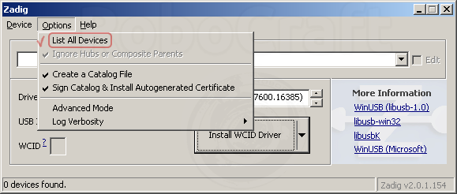
Выберите из выпадающего списка устройство USB Mass Storage Device с USB ID, равным 0483 3744 (ST-Link) или 0483 3748 (ST-Link 2), и нажмите кнопку Replace Driver:
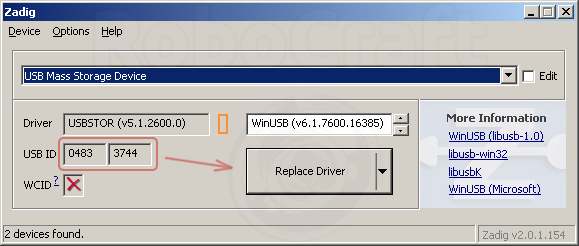
Программа предупредит, что это опасно, но мы не боимся опасностей и жмём Yes:
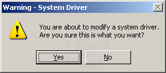
Если ничего «опасного» не произойдёт, можно будет порадоваться успешной установке:
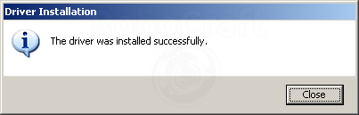
Осталось переподключить плату — и можно испытывать GDB-сервер и в Windows, и в Linux. Наберите команду:
st-util -1
Ключ «-1» указывает, что нам нужно подключить ST-Link именно версии 1. Если у вас STM32L-Discovery, на которой ST-Link 2, то этот ключ указывать не нужно. Если всё пройдёт успешно, вывод программы будет выглядеть так:
2011-11-23T18:29:57 INFO src/stlink-common.c: Loading device parameters....
2011-11-23T18:29:57 INFO src/stlink-common.c: Device connected is: F1 Medium-density Value Line device
2011-11-23T18:29:57 INFO src/stlink-common.c: SRAM size: 0x2000 bytes (8 KiB),
Flash: 0x20000 bytes (128 KiB) in pages of 1024 bytes
2011-11-23T18:29:57 INFO src/stlink-sg.c: Successfully opened a stlink v1 debugger
Chip ID is 10016420, Core ID is 1ba01477.
KARL - should read back as 0x03, not 60 02 00 00
init watchpoints
Listening at *:4242...
Сервер запущен, попробуем к нему подключиться. В другом окне с консолью запустите GDB для ARM:
arm-none-eabi-gdb
В появившемся приглашении наберите команду:
target extended-remote localhost:4242
# GDB понимает и сокращения:
# tar ext :4242
В GDB результат будет выглядеть так:
(gdb) target extended-remote localhost:4242
Remote debugging using localhost:4242
0x0800061c in ?? ()
(gdb)
В st-util:
GDB connected. -- ключевой момент!
recv: qSupported:multiprocess+;qRelocInsn+
query: Supported;multiprocess+;qRelocInsn+
send: PacketSize=3fff;qXfer:memory-map:read+
recv: !
send: OK
recv: Hg0
...
Чтобы в будущем не набирать каждый раз в консоли ‘st-util -1’ для запуска GDB-сервера, советую сделать ярлык с аргументом «-1» после пути к .exe’шнику (или shell script в Linux).
Вы ещё живы? Ничего, осталось совсем немного.
Так как ARM Plugin поддерживает Eclipse версии не старше, чем Helios (3.6.x), то её и поставим с официального сайта, взяв самую свежую версию на данный момент — 3.6.2 (Helios SR2). Нам нужна Eclipse IDE for C/C++ Developers, которая также широко известна по более короткому названию — Eclipse CDT. Качайте версию под свою ОС и распаковывайте, куда захочется. Мне захотелось в /home/burjui/apps/eclipse, например.
Запускайте Eclipse и выбирайте пункт меню Help→Install New Software… Не слишком очевидно, не правда ли? Далее действуем в соответствии с инструкциями по установке плагина, а именно жмём кнопку Add и в появившемся окне Add Repository вписываем имя плагина — например, ARM Plugin. Качаем zip-архив с плагином (нам нужна именно версия 0.5.3, более свежая требует Eclipse 3.7.x, а там поломали отладку), жмём кнопку Archive и выбираем скачанный архив, после чего жмём ОК.
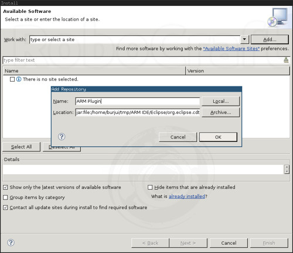
Eclipse скачает с сервера информацию о доступных пакетах и покажет нам доступный к установке плагин. Ставим напротив него галочку и жмём Next:
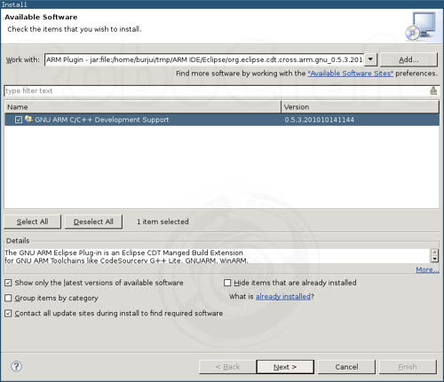
После этого мы увидим типичное малоинформативное окно в стиле «просто нажми Next», а следом — лицензионное соглашение, с которым мы, разумеется, уже согласны — просто жмём Finish:
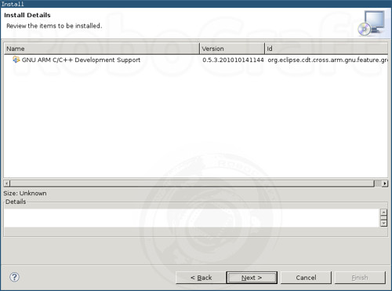
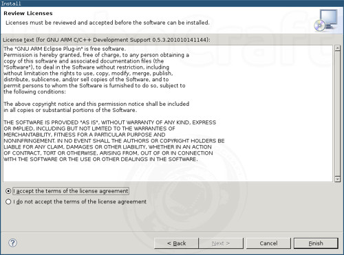
После этого процесс установки, наконец, начнётся:
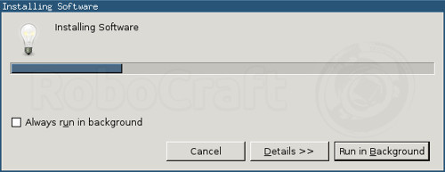
Но посреди него нас попросят подтвердить, что мы абсолютно безбашенные и действительно хотим установить софт без цифровой подписи:
Когда установка завершится, Eclipse предложит перезапуск:
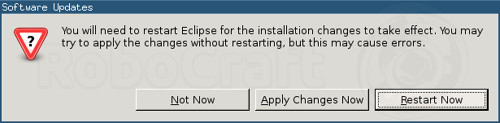
Ну вот, теперь у нас есть полноценная среда разработки для ARM.
Поди, уже расслабились? Самое интересное — впереди.
Опять же, для ленивых в конце статьи есть ссылка на архив с проектом, а самые смелые могут продолжить сеанс интеллектуального мазохизма за компанию.
В Eclipse на стартовой странице выбираем Workbench, в меню выбираем пункт File→New→C Project. В появившемся окне слева выбираем ARM Cross Target Application/Empty Project, справа — Sourcery G++ Lite:
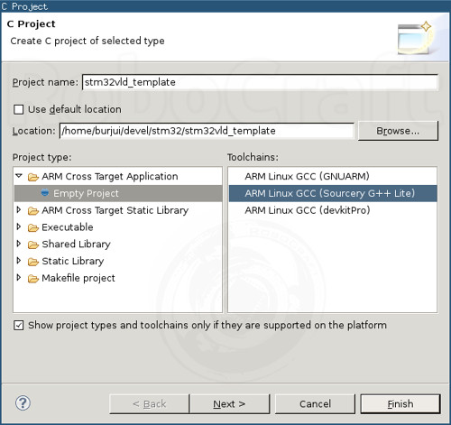
Проект я назвал так для STM32VLDiscovery, а для STM32L-Discovery я бы назвал его stm32ld_template.
Для работы с этой платой скачаем библиотеку STM32F10x Standard Peripheral Library с сайта ST (копия у нас). Последняя на данный момент версия для STM32F10x — 3.5.0, так что после распаковки у нас будет папка STM32F10x_StdPeriph_Lib_V3.5.0. Создайте в папке с проектом подпапки CMSIS и StdPeripheralDriver, скопируйте в них указанные файлы и папки из STM32F10x_StdPeriph_Lib_V3.5.0:
В CMSIS:
В StdPeripheralDriver:
Также в CMSIS нужно создать файл stm32f10x_conf.h следующего содержания:
#ifndef STM32F10X_CONF_H_
#define STM32F10X_CONF_H_
/* ------------------- */
#ifndef USE_FULL_ASSERT
#define assert_param(x)
#endif
/* ------------------- */
#endif
В папке с проектом создайте файл main.c с минимальным кодом бесконечного цикла:
#include <stm32f10x.h>
int main()
{
do __NOP(); while (1);
}
Туда же закиньте файл stm32f100rb.ld. Щёлкните правой кнопкой по проекту в Eclipse, и в контекстном меню нажмите Refresh — тогда Eclipse увидит новые файлы и папки и добавит их в проект.
Для этой платы последовательность действий такая же, только будут меняться имена папок и файлов, а местами и содержимое.
Так как на этой плате установлен микроконтроллер STM32L152RBT6, то и качать мы будем STM32L1XX Standard Peripheral Library (копия). Распаковываем архив, получаем папку STM32L1xx_StdPeriph_Lib_V1.0.0 и копируем из неё:
В CMSIS:
В StdPeripheralDriver:
В CMSIS нужно создать файл stm32l1xx_conf.h следующего содержания:
#ifndef STM32L1XX_CONF_H_
#define STM32L1XX_CONF_H_
/* ------------------- */
#ifndef USE_FULL_ASSERT
#define assert_param(x)
#endif
/* ------------------- */
#endif
В папке с проектом создайте файл main.c с минимальным кодом бесконечного цикла:
#include <stm32l1xx.h>
int main()
{
do __NOP(); while (1);
}
Туда же закиньте файл stm32l152rb.ld. Щёлкните правой кнопкой по проекту в Eclipse, и в контекстном меню нажмите Refresh — тогда Eclipse увидит новые файлы и папки и добавит их в проект.
Настроим проект так, чтобы всё это компилировалось, заливалось на МК и отлаживалось. Выбираем в меню пункт Project→Properties, в окне в левой панели выбираем раздел C/C++ Build→Settings, справа вверху из списка Configuration выбираем пункт [ All configurations ] и начинаем шерстить по подразделам настроек.
Выбираем Processor — cortex-m3, ставим галочку Thumb (-mthumb).
Добавим два определения для препроцессора языка C, которые необходимы для библиотек в StdPeripheralDriver: USE_STDPERIPH_DRIVER, а также STM32F10X_MD_VL или STM32L1XX_MD для STM32VLDiscovery и STM32L-Discovery, соответственно. Щёлкаем плюсик и вводим первое значение, второе — так же.
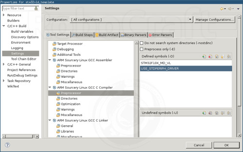
Здесь укажем, в каких папках проекта у нас лежат заголовочные файлы библиотек. Жмём плюсик и, чтобы пути к папкам считались относительно папки с проектом, жмём кнопку Workspace… и выбираем в проекте папку CMSIS:
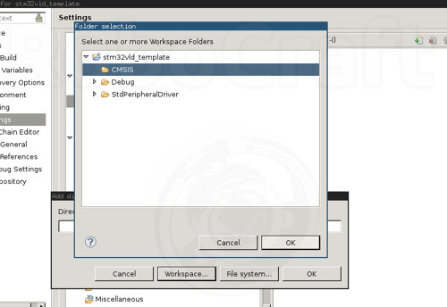
Аналогично добавляем папку StdPeripheralDriver/inc.
Здесь ставим галочки:
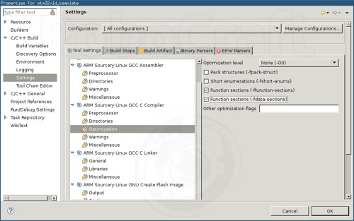
В поле Script file (-T) указываем путь к скрипту stm32f100rb.ld или stm32f152rb.ld для STM32VLDiscovery и STM32L-Discovery, соответственно — желательно, в таком же формате, как и папки в предыдущем случае, но без кавычек.
Ставим галочки:
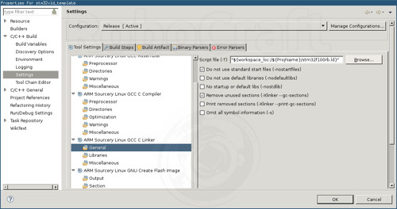
Здесь всё, жмём ОК.
Протестируем сборку проекта. Выбираем в меню отладочную сборку — Project→Build Configurations→Debug, запускаем сборку — Project→Build Project.
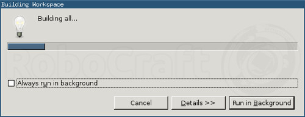
Если после окончания сборки в нижней панели на вкладке Problems ничего не написано, значит, сборка прошла успешно.
Теперь осталось только настроить отладчик. Создаём в папке проекта файл gdb_commands_debug следующего содержания:
tar ext :4242
load Debug/stm32vld_template.elf
и ещё один похожий — gdb_commands_release:
tar ext :4242
load Release/stm32vld_template.elf
Идём в Run→Debug Configurations…, правым кликом на разделе C/C++ Application вызываем меню, в котором выбираем пункт New. Настроим созданную конфигурацию.
Раздел Main:
Раздел Debugger, вкладка Main:
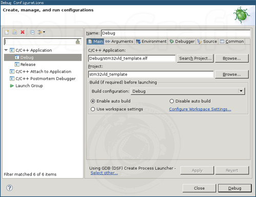
Жмём Apply. Полученная конфигурация будет у нас отладочной: после сборки проекта в прошивке будет много «лишнего» кода, который необходим для отладки, но заметно раздувает размер прошивки.
Аналогично создаём релизную конфигурацию, при сборке которой прошивка будет содержать только необходимый код:
И в приведённых выше файлах, и в настройке конфигураций вместо stm32vld_template нужно написать имя проекта, если оно у вас отличается.
Ну, теперь-то с настройкой покончено! Напоследок проверим, как работает отладка. Для этого запускаем GDB-сервер (‘st-util -1’) и в меню жмём Run->Debug Configurations…, выбираем конфигурацию Debug и жмём кнопку Debug внизу окна. Сервер должен отреагировать кучей сообщений в консоли:
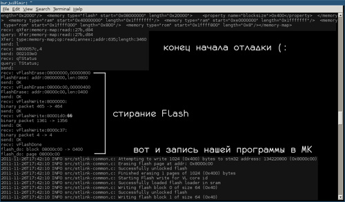
Eclipse же в это время попросит разрешения открыть «отладочную перспективу». Рекомендую не только согласиться, но и поставить галочку, чтобы IDE больше не спрашивала, а сразу открывала перспективу. «Перспективами» в Eclipse называются наборы настроек расположения окон: положение, стиль (отдельно или табом в родительском окне) и пр. Отладочная перспектива, возникшая перед нами, отличается наличием окон, специфичных для отладки — Breakpoints, Registers, Disassembly, Debug, Memory и пр. Перечисленные мной окна наиболее информативны и полезны для отладки. Расположение окон по умолчанию ужасно, поэтому я при первой же отладке привёл всё вот к такому виду:
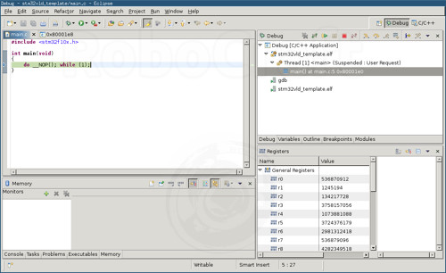
Если вы дошли до этого момента, и всё заработало — честь вам и хвала. Теперь понимаете, за что просят деньги разработчики коммерческих IDE?
А вот я ещё нет. Пойму, когда:
Ибо настроил я всю эту бодягу за денёк, а остальные две недели патчил stlink, писал статью и тестировал сборки, так что мне не понятно, за что тут платить бабло, если работы от силы на день, и то — без руководства (;
Но если вдруг у вас ничего не заработает даже в приготовленной мной сборке IDE, тогда следующий раздел — для вас.
Ну, тут полная халява. Если провести аналогию с автомобилями, то CoIDE нельзя превратить в бульдозер или велосипед по выбору, зато тачка очень удобная — сел и поехал.
Идём на страничку IDE, качаем по ссылке «Download directly» внизу страницы, устанавливаем, куда душе угодно, и запускаем. При первом запуске CoIDE покажет мастер создания проекта, в котором нужно выбрать производителя нашего микроконтроллера — ST:
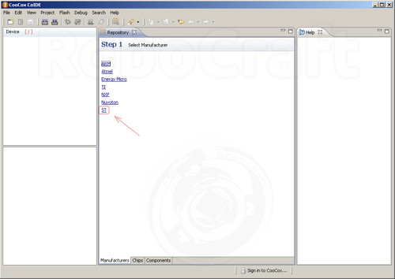
Далее появится список МК, в котором нужно выбрать STM32F100RB, установленный на плате STM32VLDisvovery:
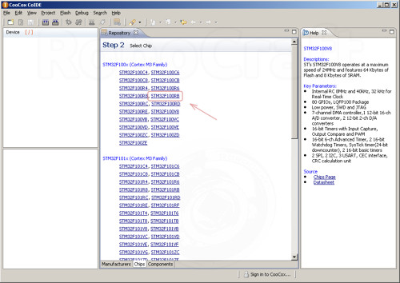
Появится окно так называемого «репозитория», в котором установкой галочек можно выбирать подключаемые к проекту библиотеки. При этом учитываются зависимости между библиотеками, что не может не радовать. В следующем уроке мы будем разбирать порты ввода-вывода (GPIO) так что отметим соответствующую библиотеку. Так как мы ещё не создали ни одного проекта, CoIDE предложит нам создать новый, на что мы согласимся:
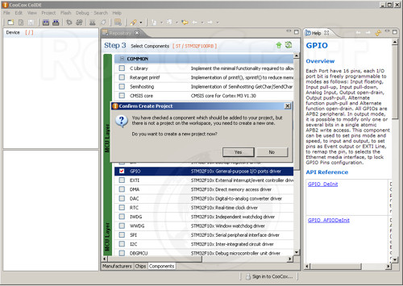
По умолчанию папка для проектов располагается в установочной папке CoIDE и называется «workspace». Вообще, это не очень хороший вариант, я бы советовал создать отдельную папку где-нибудь в «Моих документах» или ещё где, но это личное дело каждого, а я решил ничего не трогать — в своей виртуальной машине в VirtualBox я могу мусорить сколько душе угодно (:
Скелетный проект по причине, изложенной в начале статьи (про плюсы и минусы), создавать бессмысленно, так что сразу сделаем проект для следующей статьи и назовём его stm32vld_quickstart:
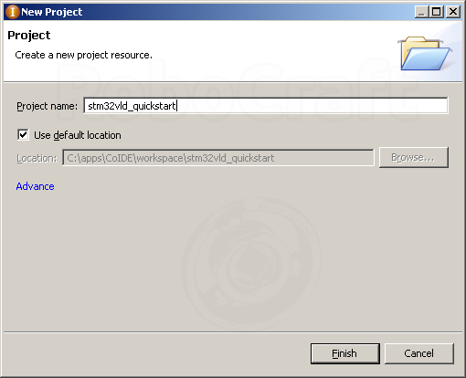
Вот и всё, первый проект создан, можно даже приступать к кодингу. Но приступим мы к нему в следующей статье, а пока можете глянуть на файловую структуру проекта:
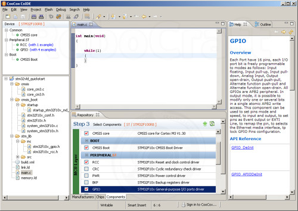
Слева, кроме структуры проекта, так же показывается модель МК, для которой мы пишем, и список подключенных библиотек — идеально для склеротиков вроде меня (:
Теперь нужно зайти в Debug→Debug Configuration… и установить параметры отладки/прошивки:
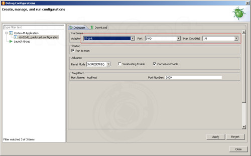
Теперь выбираем в меню Debug→Debug и CoIDE скомпилирует проект, зальёт прошивку на МК и запустит отладку:
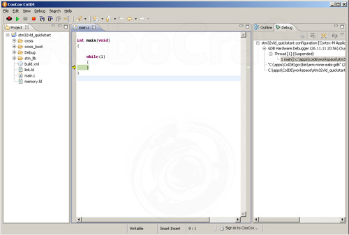
Вот и вся настройка. Конечно, за простоту приходится платить, но в данном случае не деньгами, а минусами, перечисленными в начале статьи. Ну да ладно, зато оно работает сразу (:
Итак, на данный момент я сделал и протестировал три сборки IDE — для 32- и 64-битной Linux 32-битной Windows, а для 64-битной Windows будет чуть позже — нужно собрать GCC и компанию.
Среду разработки я назвал, не мудрствуя лукаво — RoboCraft ARM IDE (для краткости просто RC-ARM), версия 0.1
Впрочем, это не официальное название, оно пока просто для удобства — чтобы не писать «ну вон та первая сборка IDE, которую я слепил во второй статье» (:
sudo cp 49-stlinkv* /etc/udev/rules.d/
sudo udevadm control --reload-rules
sudo cp stlink_v1.modprobe.conf /etc/modprobe.d
sudo modprobe -r usb-storage && sudo modprobe usb-storage
Также нужно установить libusb-1.0, 32-битную версию libncurses-5 (для GDB) и make.
Всё, отныне больше ничего для настройки делать не придётся. В папке с IDE лежат два скрипта — start-ide.sh и start-stlink.sh. Первый устанавливает переменные окружения, чтобы Eclipse увидел GCC для ARM, и запускает Eclipse, в котором уже установлен ARM Plugin. Второй запускает утилиту stlink, которая должна быть запущена всё время, пока вы пользуетесь отладкой и прошивкой. Самые хитрые могут добавить вызов второго скрипта в первый и не париться (:
Во всех сборках присутствует Java Runtime Environment 6 update 29, необходимая для работы Eclipse, и IDE подхватывает JRE автоматически.
Об ошибках в работе IDE прошу писать в соответствующую тему на форуме.
Все необходимые файлы для скелетного проекта:
Распакуйте нужный архив и настройте проект, как написано в статье, только без копирования файлов. После настройки проект соберётся и в Windows, и в Linux, при условии, что IDE настроена правильно. При смене IDE на другую версию (точнее, ARM Toolchain) могут перестать собираться уже настроенные проекты из-за того, что ARM Plugin хранит в настройках проекта пути к стандартным заголовочным файлам компилятора — в этом случае нужно удалить файлы настроек из папки с проектом (их имена начинаются с точки) и выполнить настройку заново.
Чтобы добавить проект в свой workspace, в Eclipse выберите в меню Project→Import, а в появившемся окне выбрать General→Filesystem и указать распакованную из архива папку или сам архив. Как я уже упоминал, для CoIDE скелетный проект создавать смысла нет, т.к. в CoIDE создать проект не сложнее, чем подумать об этом, ну, и с копированием проектов в ней проблемы.
Для тех, кто решил когда-нибудь потом приготовить IDE по этому рецепту, привожу список ингредиентов:
git clone git://github.com/burjui/stlink.git -b server-restart
Сборки:
На данный момент нужен именно мой репозиторий, а не оригинал, и именно ветка server-restart — в ней есть патчи, позволяющие утилите работать непрерывно, а не завершаться после каждого дисконнекта. В будущем, когда мои патчи попадут в основную ветку, я обновлю пост.
Сейчас утилита работает довольно медленно — прошивает всего около 500 байт в секунду, но это пока не начали работу по оптимизации.
Уфф… Вроде, всё. Ошибки, неточности, советы, вопросы принимаются. За сим откланиваюсь и лечу писать quickstart.